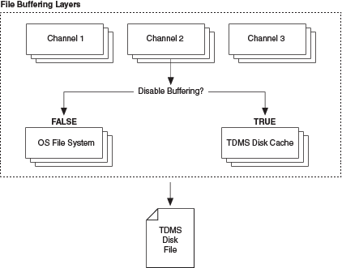

During TDMS file I/O operations, data that LabVIEW writes to a TDMS file resides in a buffer until the buffer fills up or until you close the file. Buffering can occur at the channel layer, in the operating system (OS) file system, or in the TDMS disk cache.
The following figure illustrates buffering with TDMS files for standard TDMS VIs.
|
Note��For the Advanced TDMS VIs and functions, buffering occurs only in the OS file system. If the disable buffering? input is TRUE, buffering does not occur at any layer. |

The layer at which buffering occurs can depend on the property you set using the TDMS Set Properties function. For example, the NI_MinimumBufferSize property determines the number of data samples to buffer at the channel layer. The disable buffering? input of TDMS functions determines whether LabVIEW disables system buffering, which occurs in the OS. When the disable buffering? input is TRUE, LabVIEW disables system buffering and buffering occurs in the TDMS disk cache. The NI_DiskCacheSize property determines the amount of cache size in the TDMS disk cache to allocate for data. This property is valid only if the disable buffering? input is TRUE.
To write all buffers directly to the TDMS file, use the TDMS Flush function.
|
Note��The NI_MinimumBufferSize property and the NI_DiskCacheSize property do not apply to the Advanced TDMS VIs and functions. |
You may want to disable buffering to speed up data transfers in the following situations: